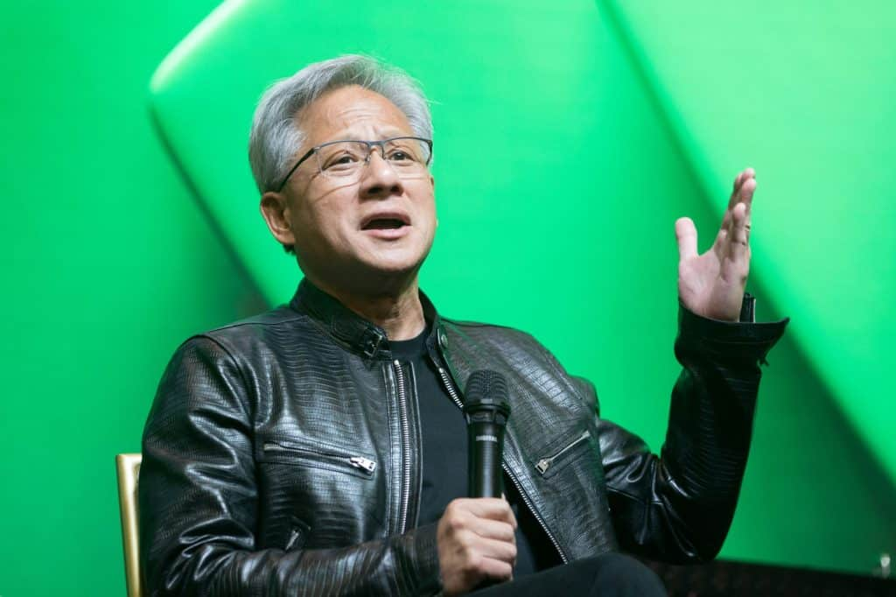
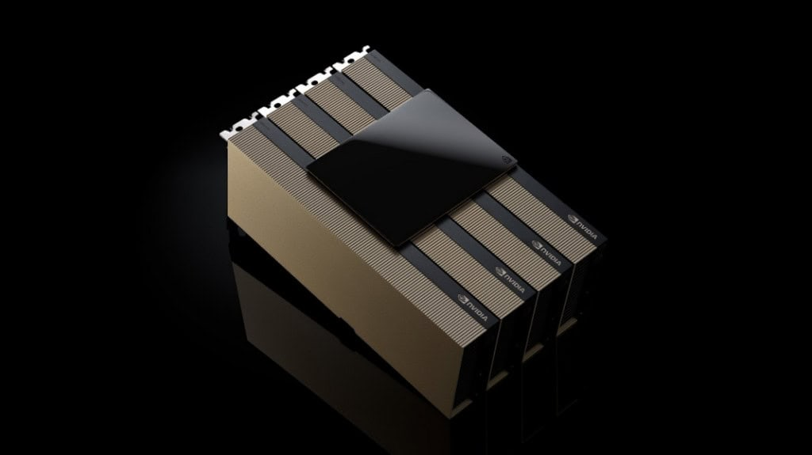

Nvidia retoma produção de chips H200 para o mercado chinês
Por William Felipe Lima —

As operações exigem autorização tanto do governo americano quanto das autoridades chinesas. Segundo a Reuters, Pequim aprovou a venda dos chips H200, e a Nvidia também já havia obtido algumas licenças americanas nos meses anteriores. Em fevereiro, os EUA concederam uma licença que permitia “pequenas quantidades de produtos H200 para clientes específicos baseados na China”, conforme registro feito pela empresa junto à Comissão de Valores Mobiliários dos EUA (SEC). Pequim pretende aprovar as operações gradualmente, para limitar a dependência da tecnologia chinesa em relação aos produtos americanos.
Histórico de restrições
Histórico de restrições Em abril de 2025, o governo americano proibiu inicialmente a Nvidia de exportar seus processadores para a China. Em agosto, um acordo foi firmado com a empresa californiana que previa o pagamento de uma comissão ao Estado, percentual que subiu para 25% em dezembro.

Desde então, no entanto, as entregas estavam paralisadas. No fim do mês passado, a Nvidia havia anunciado que não esperava nenhuma receita do mercado chinês no trimestre atual. Para cumprir as restrições impostas pelo governo americano, que se recusa a permitir que a empresa venda seus produtos mais avançados para empresas chinesas, a Nvidia desenvolveu uma nova versão do processador H200.
"Estamos retomando a fabricação"
— Jensen Huang, diretor-executivo da Nvidia
Chip Groq também pode chegar à China
A Reuters revelou ainda que a Nvidia está preparando uma versão do chip de inteligência artificial Groq para venda no mercado chinês. A empresa planeja utilizá-lo para o que é conhecido como inferência, etapa em que sistemas de IA respondem perguntas, escrevem código ou executam tarefas para usuários. Nos produtos apresentados pela Nvidia nesta semana, a empresa planeja combinar seus futuros chips Vera Rubin, que não podem ser vendidos na China, com os chips Groq. Os chips sendo preparados para o mercado chinês não são versões rebaixadas nem foram desenvolvidos exclusivamente para esse mercado, segundo uma das fontes ouvidas pela Reuters. A expectativa é que o chip Groq esteja disponível em maio.